The backtest.module.ts file serves as the configuration bridge between the backtest-kit framework and the specific requirements of the February 2026 trading strategy. It defines the exchange communication protocols, historical data windows, and global framework overrides necessary for executing a high-fidelity backtest.
The module utilizes the backtest-kit registry pattern to define how the system interacts with external data and how it segments time during simulation.
| Entity | Code Symbol | Purpose |
|---|---|---|
| Exchange Schema | ccxt-exchange |
Standardizes API calls for candles, order books, and precision formatting. |
| Frame Schema | feb_2026_frame |
Defines the temporal window (Feb 2026) and 1m resolution. |
| Exchange Instance | getExchange |
A singleshot Binance singleton using CCXT. |
| Global Override | CC_MAX_STOPLOSS_DISTANCE_PERCENT |
Disables framework-level stop-loss distance constraints. |
The system uses the ccxt-exchange schema to wrap the CCXT library. This allows the strategy to remain agnostic of specific exchange API quirks while benefiting from Binance's liquidity data.
To prevent redundant connections and market loading, the module implements a singleshot (memoized) exchange getter. It configures the Binance spot market with enableRateLimit and time difference adjustments.
The addExchangeSchema function registers four primary methods:
getCandles: Fetches OHLCV data using exchange.fetchOHLCV. It maps the raw array response into the structured objects required by backtest-kit.getOrderBook: Fetches depth data. Note that this method explicitly throws an error if called during a backtest context to prevent unintentional real-time data leakage into historical simulations.formatPrice: Ensures prices adhere to exchange-specific tick sizes. It prefers market.limits.price.min or market.precision.price and utilizes roundTicks for precision.formatQuantity: Similar to price formatting, it ensures order amounts respect the stepSize of the specific trading pair.The following diagram illustrates how the backtest-kit framework consumes the registered ccxt-exchange schema during a simulation.

The feb_2026_frame defines the boundaries of the backtest. This configuration is critical for ensuring the Backtest.run() generator produces the correct sequence of timestamps.
1m (One-minute resolution).2026-02-01T00:00:00Z.2026-02-28T23:59:59Z.This frame ensures that the strategy is tested against the specific volatile period of February 2026, which includes the macro-events the LLM is trained to analyze.
The module sets specific global configurations using setConfig.
setConfig({
CC_MAX_STOPLOSS_DISTANCE_PERCENT: 100,
});
By setting CC_MAX_STOPLOSS_DISTANCE_PERCENT to 100, the strategy disables the default safety checks that would otherwise reject signals with very wide stop-losses. This is necessary for the feb_2026_strategy which may utilize wide stops or rely on logic-based exits (like sentiment flips) rather than tight technical stops.
The following diagram maps the natural language requirements of a backtest to the specific code entities defined in the module.
Diagram: Backtest Configuration Mapping
